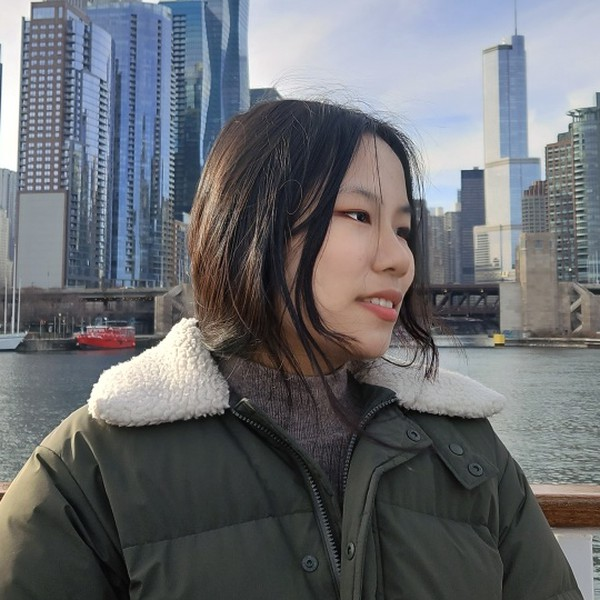

Eunbeen Hong
M.S./Ph.D. student · CVLAB, KAIST AI · Seoul, Korea
Understanding and generating dynamic 3D worlds from video: feed-forward 4D novel view synthesis, video diffusion, and what large vision models already know about scenes.
I am an M.S./Ph.D. integrated student at CVLAB, KAIST AI, advised by Prof. Seungryong Kim. I received my B.E. from Korea University. My recent work builds feed-forward latent models for 4D novel view synthesis and probes the structure hidden inside diffusion transformers and foundation models for segmentation.
News
- 2026TETO is accepted to ECCV 2026.
- Sep 2025Seg4Diff is accepted to NeurIPS 2025.
- Jun 2025S4M is accepted to ICCV 2025.
Publications
* equal contribution · † corresponding author
Honors
- 20241st Place, Justice Hacks, CruzHacks 2024TuitionShock.us · 700+ students from 25 universities · UC Santa Cruz
- 2023Outstanding Project, Top 10 of 50 teams, Natural Language ProcessingLyriKOR, Korea University
- 2021Academic Excellence ScholarshipFull-ride scholarship covering tuition and fees for all four years, Korea University
- Best Tutor AwardPeer Tutoring Program, Korea University
Projects
TuitionShock.us
CruzHacks 2024A heatmap of the cost of community colleges and universities across the United States. Built the MongoDB and Flask backend and made the front end responsive. First place in the Justice Hacks track.
3D: Diffusion Deception Detector
Computer visionSeparates diffusion-generated images from real ones by feeding PRNU noise residuals to a ViT to pick up the fingerprints generative models leave behind. Designed the model and ran ablations, reaching over 0.9 accuracy on LSUN Bedroom.
LyriKOR
NLP · HCLT 2023Translates English lyrics into singable Korean by aligning syllable counts, with a Style Transformer based pipeline. Gathered and cleaned the data. Selected as a top 10 class project and published at the 35th Annual Conference on Human and Cognitive Language Technology.
LCBot
With Dell TechnologiesA retrieval-augmented chatbot on an open-source backbone that answers questions grounded in a given set of documents. Built in cooperation with Dell Technologies.
Skills
Education


Experience
Semi-supervised instance segmentation with SAM (S4M, ICCV 2025) and open-vocabulary segmentation inside diffusion transformers (Seg4Diff, NeurIPS 2025).